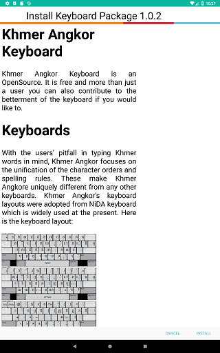
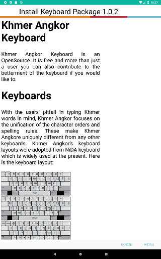
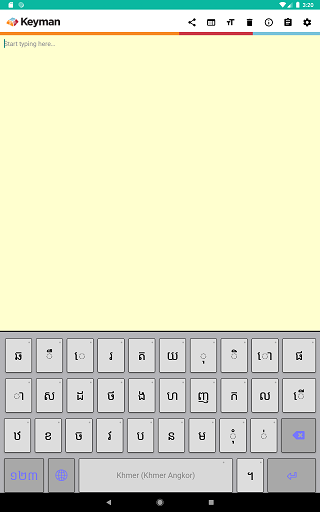
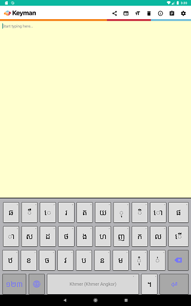

Installing Custom Keyboards/Dictionaries
These same steps can be used for installing custom keyboard or custom dictionary packages. This example is for Khmer Angkor keyboard.
Step 1) Click the link to your custom package file.


Step 2) Once the KMP file is on your device, you will need to browse to the KMP file and select it.
From the Keyman menu, select 'Settings'.
From the Keyman Settings menu, select 'Add Keyboard from Device'.

The device will launch a file browser where you'll browse to the directory of your KMP file. A common place to look is the "Downloads" folder.


Selecting the KMP file should bring you to Step 3)
Step 3) On Android 6.0 (Marshmallow) and higher, mobile apps need to request permissions to access storage. Keyman for Android needs access to read storage for installing the KMP file. At the dialog, select "ALLOW". Once authorized, Keyman for Android won't need to ask for storage permission again, unless the user revokes or uninstalls the app.


Older versions of Android grant Storage permissions at app installation time, so those users can skip this step.
Step 4) Keyman for Android will parse the metadata in the package. If the keyboard package includes a "welcome.htm" file, this will be displayed at the confirmation to install the keyboard package.
 

If "welcome.htm" is not included, a generic page with the package ID and package version will be shown. Click the left "Install" button to install the entire keyboard package.
Step 5) All the keyboards in the package are installed as a group. In this example, the package only has the "Khmer Angkor" keyboard, so it becomes the active keyboard. For custom dictionary packages, only one dictionary will be installed.
 

Once the keyboard has been installed, you should be able to use it as normal.
To learn how to create a custom installable keyboard,
click here.
Granting storage permission
If Keyman for Android is permanently denied storage access, attempts to install custom packages will fail with the notification "Storage permission request was denied". Perform these steps to grant Keyman for Android access to storage
Step 1) Go to Android Settings.
Step 2) Depending on your device, click "Apps", "Apps & notifications", or "App permissions" and grant Keyman
storage permission. The screenshot below is from Android 9.0 Pie.